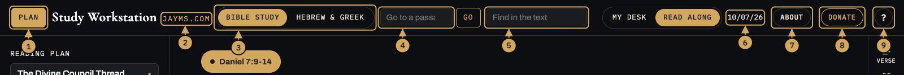
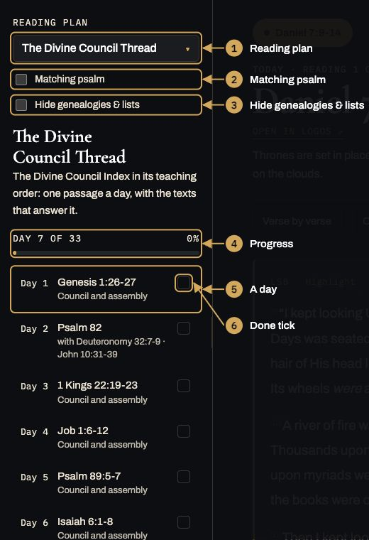
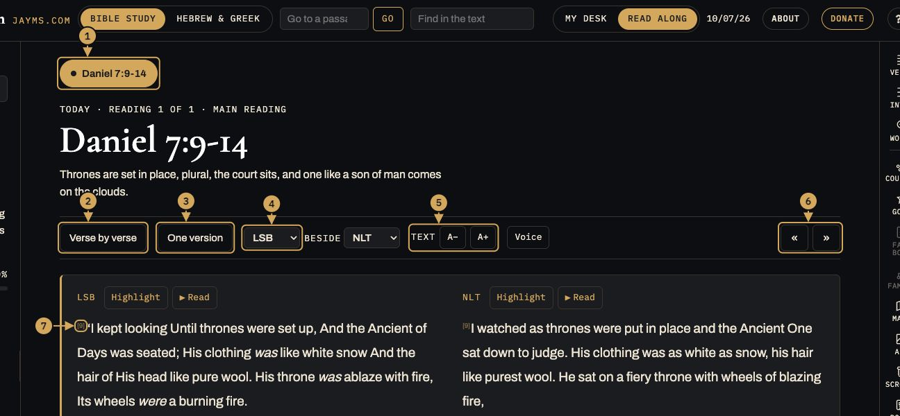
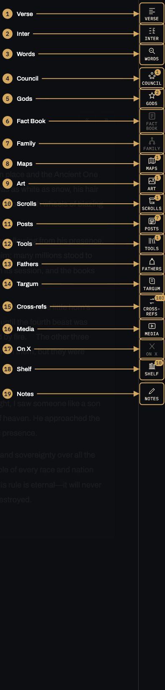
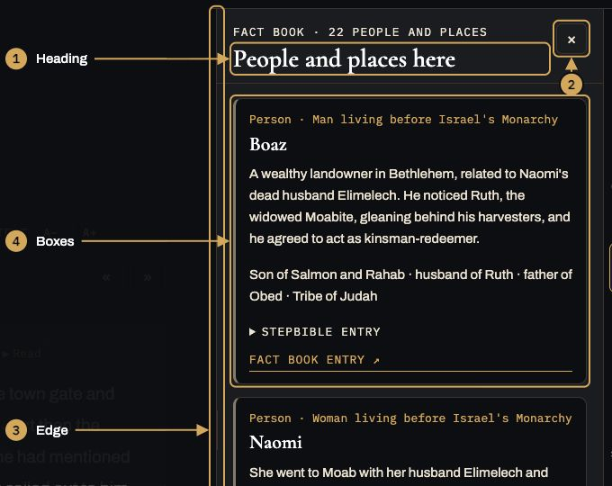
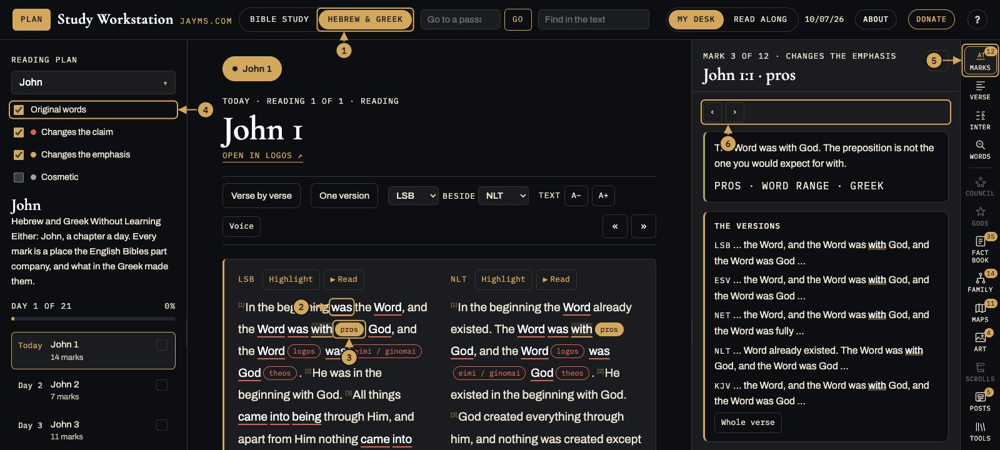
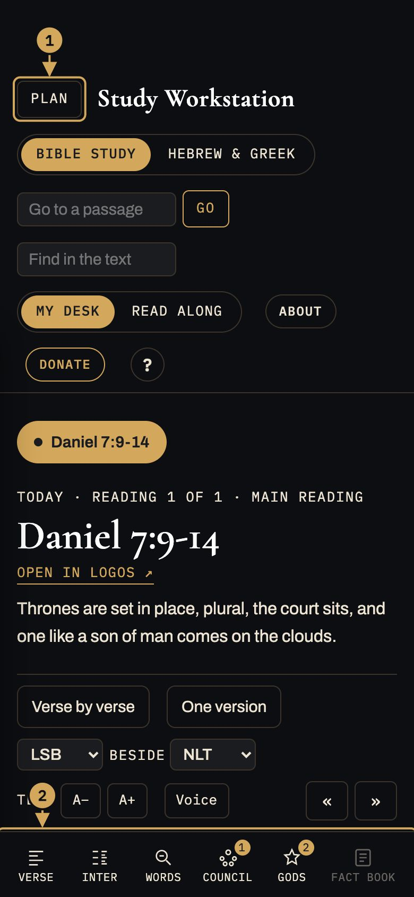

How the Study Workstation works
Three parts: the reading plan on the left, the reader in the middle, and the side panel on the right, opened from the buttons down the right edge.
Something broken, or something you'd like it to do?
Report a bug
Ask for a feature
How to use it
The top bar
Along the top, left to right.

- Plan Shows or hides the reading plan on the left (on a phone it slides in).
- jayms.com Opens the online version of the app on jayms.com.
- Bible Study / Hebrew & Greek Switches between the two apps. Hebrew & Greek reads John, Genesis and Psalms with the places the original shapes the English marked.
- Go to a passage Type any reference, like Mark 13:14 or Psalm 82, and press Go. It opens in its own tab beside the day's readings.
- Find in the text Highlights a word everywhere in the passage on screen. Enter jumps to the next one.
- Today's date Today's date, month/day/year; the reading plan's Today follows it.
- About Why this app exists.
- Donate Buy Me a Coffee, to support the project.
- ? This guide, plus the buttons to report a bug or ask for a feature.
The reading plan
The left side: which plan you're reading and where you are in it.

- Reading plan Tap to pick a plan. Each app lists its own plans.
- Matching psalm Adds a psalm that matches the day's reading.
- Hide genealogies & lists Genealogy and list chapters are greyed in the list; this takes them out.
- Progress Which day of the plan it is, and how much is done.
- A day Tap a day to read it. The list starts at the first day not yet done.
- Done tick Ticks itself when every reading that day is marked Done.
The reader
The middle: the passage, and how it's shown.

- Reading tabs One tab for each of the day's readings, and one for each passage you open with Go. × closes an opened passage.
- Verse by verse / Reading view Named for what it switches to: one verse per line, or paragraphs.
- Parallel / One version Shows two versions side by side, paragraph by paragraph.
- Version Which translation you read in: LSB, ESV, NET, NLT, NASB, CSB, BSB, KJV, MSG or Brenton's Septuagint.
- A− and A+ Makes the text smaller or bigger.
- « » Previous and next chapter.
- Verse number Tap a verse number for that verse's tools.
Under the text
When you've read it.
The side buttons
Down the right edge (along the bottom on a phone). Each opens a panel about the passage on screen. A number is how many there are for this passage, a greyed button has nothing for it, and a plain one always has something.

- Verse Verse tools: one verse in Hebrew or Greek word order with Strong's numbers, Dead Sea Scrolls readings, and any words in your glossary.
- Inter Interleaved Bible: the passage with the interlinear under each line, and where it sits in the book's outline.
- Words Word Study: every key Hebrew or Greek word in the passage. Tap one for its meaning and where else it is used.
- Council Divine Council Index: what the Index says about this passage.
- Gods Gods of the Bible: the gods and spiritual beings named here.
- Fact Book People and places in the passage, with STEPBible's family lines, its own entry on each, and the Bible maps a place is on.
- Family A family tree for anyone named here: grandparents to grandchildren. Tap a name to move the tree to them.
- Maps Every place in the passage pinned on a map of the ancient world, then the Bible maps for the passage (and, on your desk, your Logos atlases). Tap a map for full screen.
- Art Paintings of the scene you are reading, matched to its verses: works museums have tagged with the scene (the Met, the Louvre, the Prado, the Rijksmuseum, the National Gallery and others), oldest first. Scenes the text only implies, like the Lamentation, sit under Related scenes.
- Scrolls The Dead Sea Scrolls that hold verses of the passage, with photographs of the fragments from the Leon Levy Digital Library.
- Posts James's jayms.com posts that cite this passage, most citations first.
- Tools The free study sites (Blue Letter Bible, Bible Hub, STEPBible, NET, Bible Gateway, OpenBible, Enduring Word, Sefaria), each opened at this passage, then texts outside the Bible that bear on it (Septuagint, Dead Sea Scrolls, Enoch and more).
- Fathers What the early Church Fathers wrote on each verse, oldest first: an excerpt each, and Read it opens the whole comment on historicalchristian.faith.
- Targum The Aramaic Targums in English, verse by verse under your reading version: Onkelos and Pseudo-Jonathan on the Torah, Targum Jonathan on the Prophets. Complete for the Torah, 1 and 2 Samuel and Isaiah; partial elsewhere; none in English for the Writings.
- Cross-refs Other passages that quote or echo this one, strongest first. Tap one to read it in place; Open puts it in the reader.
- Media Listen (LSB audio), one button per chapter in the reading; playing one carries on through the rest. Then three tabs: BibleProject videos and articles (with the guide to the book), Podcasts (BibleProject and the Naked Bible Podcast), and Heiser (Michael S.
- On X Draft a post about the passage, with a jayms.com link, and open it in X to post.
- Shelf Study notes on the passage (the open Tyndale and Biblica study notes).
- Notes All of today's notes as one page.
A panel
What opens when you tap a side button.

- Heading What the panel is showing, for which passage.
- × Closes the panel. Tapping the same side button closes it too.
- Edge Drag the panel's edge to make it wider or narrower; double-click puts it back.
- Boxes Each box's coloured edge says what it is: gold is Scripture, green is an ancient witness, olive is a reading of it, blue is an open question.
Hebrew & Greek
The same frame, reading John, Genesis or Psalms with the places the original shapes the English marked.

- Hebrew & Greek Switches to this app; Bible Study switches back. Each remembers its own plan.
- A marked word An underlined word is a place the English Bibles part company. Red changes the claim, gold the emphasis, grey is cosmetic.
- The original word The Hebrew or Greek word, in English letters, right after the word it explains. Hover either and both light up; tap to open it.
- Marks to show Under the plan: Original words shows or hides the tags; the colour boxes turn each kind of mark on or off.
- Marks The panel for the mark you tapped: the versions around it, then plain English, what you're seeing, why translators split and the rule to carry away. ‹ › or the arrow keys step through the chapter's marks.
- ‹ › Steps to the previous or next mark in the chapter (the arrow keys do too).
On a phone
The same app, narrower.

- Plan Slides the reading plan in from the left.
- Side buttons Along the bottom; swipe sideways for more. A panel opens as a sheet over the text.
Every button
The buttons down the side (along the bottom on a phone): a number is how many there are for this passage; a greyed button has nothing for this passage; a plain one always has something to show.
Hebrew & Greek
The second switch in the top bar. It is "Hebrew and Greek Without Learning Either" from jayms.com, read a chapter at a time in this same frame. The plans are John, Genesis and Psalms, a chapter a day.
- Marks
- An underlined word is a place where the English Bibles part company. The tag right after it is the Hebrew or Greek word, in English letters. Red changes the claim, gold changes the emphasis, grey is cosmetic. Hover one and its word and tag light up together; tap either to open it.
- The Marks panel
- The versions, cut to the words around the mark (Whole verse shows all of it), then in plain English, what you are seeing, why translators split, and the rule to carry away. ‹ › or the arrow keys step from mark to mark.
- The boxes under the plan
- Original words shows or hides the tags. The three colour boxes turn each kind of mark on or off; Cosmetic starts off.
The top bar
- Plan
- Shows or hides the reading plan (on narrow screens).
- Go to a passage
- Type any reference, like Mark 13:14 or Psalm 82, and press Go.
- Find in the text
- Finds a word in the passage on screen and highlights every match. Enter goes to the next match, Shift+Enter back, Esc clears it. Ctrl+F or Cmd+F jumps here.
- ?
- This guide.
A refresh brings you back to where you were: the plan, the day and reading (or the passage you opened, until midnight), the panel you had open, and how far down the page you were.
Reading plan (left)
- Reading plan
- Pick a plan: The Divine Council Thread, Gospel of Luke, Psalms 150, F260, F260 NT, The Gospels Together, and the BibleProject plans (Paul's Letters, Major Prophets, Minor Prophets).
- Matching psalm
- Adds a psalm to each day that fits that day's chapter, with the reason it was picked.
- Days
- Tap a day to read it. A plan starts at day 1 the first day you open it, and moves on a day at a time.
Reader (middle)
- Reading tabs
- When a day has more than one reading, each gets a tab at the top.
- Verse by verse / Reading view
- One button, named for what it switches to: one verse per line, or back to paragraphs. Reading view breaks where the text's own paragraphs begin (the ESV's paragraphing, the same in every version, so Parallel columns line up).
- « »
- At the right of the toolbar: the chapter before or after the one on screen, across books too (Malachi 4 » Matthew 1). It moves the opened tab you are on to that chapter.
- Parallel / One version
- One button, named for what it switches to. Parallel shows two versions in columns. Pick them in the two version menus (LSB, NLT, ESV, NET, BSB, CSB, NASB, MSG, LXX, KJV). LXX is Brenton's English Septuagint, Old Testament only, placed at the English verse numbers (his Psalm 81 shows beside Psalm 82).
- A− and A+
- Text size.
- Highlight · Read · Voice
- Beside each version's name: Highlight selects that column's text; Read has Speechify read it aloud (press again to stop). Voice, in the toolbar, picks the voice and speed. Desk only.
- Verse numbers
- Tap one to open that verse in Verse tools.
- Dotted words
- Tap one to open it in Word Study.
Side panel (right edge buttons)
Tap a button to open its panel; tap it again to close. A number on a button means it has something for this passage. Drag the panel's left edge to make it wider.
- Verse
- Verse tools: one verse in Hebrew or Greek word order with Strong's numbers, Dead Sea Scrolls readings, and any words in your glossary.
- Inter
- Interleaved Bible: the passage with the interlinear under each line, and where it sits in the book's outline.
- Words
- Word Study: every key Hebrew or Greek word in the passage. Tap one for its meaning and where else it is used.
- Council
- Divine Council Index: what the Index says about this passage.
- Gods
- Gods of the Bible: the gods and spiritual beings named here.
- Fact Book
- People and places in the passage, with STEPBible's family lines, its own entry on each, and the Bible maps a place is on.
- Family
- A family tree for anyone named here: grandparents to grandchildren. Tap a name to move the tree to them.
- Maps
- Every place in the passage pinned on a map of the ancient world, then the Bible maps for the passage (and, on your desk, your Logos atlases). Tap a map for full screen.
- Scrolls
- The Dead Sea Scrolls that hold verses of the passage, with photographs of the fragments from the Leon Levy Digital Library.
- Art
- Paintings of the scene you are reading, matched to its verses: works museums have tagged with the scene (the Met, the Louvre, the Prado, the Rijksmuseum, the National Gallery and others), oldest first. Scenes the text only implies, like the Lamentation, sit under Related scenes. Then the objects in the story and relics tied to the verses, and links to search the British Museum, the Museum of the Bible and the Index of Medieval Art. Tap a picture for full screen.
- Posts
- James's jayms.com posts that cite this passage, most citations first.
- Tools
- The free study sites (Blue Letter Bible, Bible Hub, STEPBible, NET, Bible Gateway, OpenBible, Enduring Word, Sefaria), each opened at this passage, then texts outside the Bible that bear on it (Septuagint, Dead Sea Scrolls, Enoch and more).
- Fathers
- What the early Church Fathers wrote on each verse, oldest first: an excerpt each, and Read it opens the whole comment on historicalchristian.faith.
- Targum
- The Aramaic Targums in English, verse by verse under your reading version: Onkelos and Pseudo-Jonathan on the Torah, Targum Jonathan on the Prophets. Complete for the Torah, 1 and 2 Samuel and Isaiah; partial elsewhere; none in English for the Writings.
- Cross-refs
- Other passages that quote or echo this one, strongest first. Tap one to read it in place; Open puts it in the reader.
- Media
- Listen (LSB audio), one button per chapter in the reading; playing one carries on through the rest. Then three tabs: BibleProject videos and articles (with the guide to the book), Podcasts (BibleProject and the Naked Bible Podcast), and Heiser (Michael S. Heiser Foundation articles on this passage).
- Shelf
- Study notes on the passage (the open Tyndale and Biblica study notes).